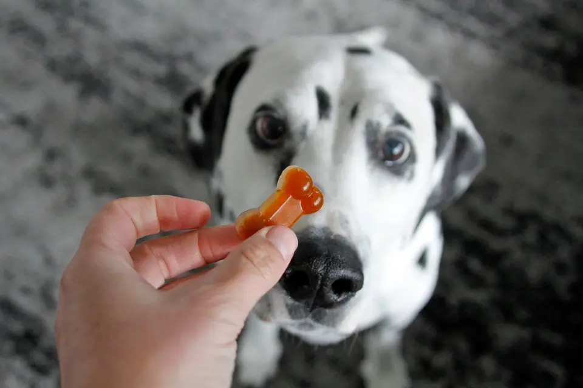

Puppy Jellies!

Jelly, our favourite childhood treat can now be enjoyed by your dog too!
This super simple recipe is not only quick but it can be easily adjusted
to include your dog’s (borrowed or owned) favourite ingredients.
Ingredients
- Chicken, beef or vegetable stock
- Unflavoured and unsweetened gelatine
-
Treats of choice(dog-friendly peanut butter, treats, pieces of meat,
veggies, etc.)
Steps
- Place stock cubes in a jug and add boiling water
- Stir until fully dissolved and add packets of gelatin.
-
Stir gelatin in thoroughly. If you’re adding peanut butter add this
after the gelatin.
- Pour mixture into a mould or dish.
- If you’re adding dry treats or meat add them now.
- Refrigerate for a few hours or until jelly is firm.
- Unmould treats or cut if using a dish and let your doggy dig in!